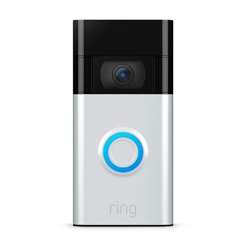

|
Smartico Smart doorbell is a 720p HD video doorbell that lets you see, hear and speak to people from your phone or tablet
Get notifications whenever motion is detected by adjusting your motion zones.
Powered by a built-in rechargeable battery or connects to existing doorbell wiring.

|
|
Smartico Hub Max works with thousands of smart home devices, like lights, TVs, and locks.
And you can easily control them all from one place. You can also control compatible TVs, speakers
and game consoles from Smartico Hub Max with your voice or from one dashboard.

|
|
The Smartico Thermocare E is a smart thermocare with a simple design and a new frosted display
blend into the background. With proven energy-saving features, the Smartico Thermocare E can help
you save from day one. And you can change the temperature from anywhere – the beach, the office or your bed.

|
|
The Smartico Pro 3 has a built-in siren and works with Alexa and Google Assistant. A USB drive
in the hub handles local storage. The 2K streaming is stellar (assuming your Wi-Fi connection is solid).

|
|
Lock and unlock your door from anywhere, grant secure access to friends and family,
and track who is coming and going, all from the Smartico app. Automatically unlocks
when you arrive and locks when you leave. Smartico Lock Pro works with all three voice
assistants - Siri, Amazon Alexa, and the Google Assistant.

|